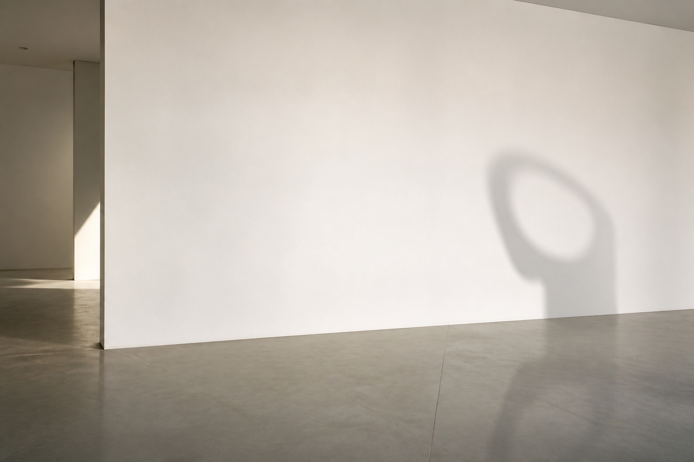

布雷拉美术学院 · 雕塑研究生
Shang
Bo
以雕塑、装置与材料实验，记录日常物件中沉默的情感、创伤与时间。
Artist Profile
尚博的创作从日常材料出发，在石、青铜、铝板、影像与装置之间，寻找不可言说的关系与可被触摸的记忆。
Selected Works
Five works · 2024-2026
布雷拉美术学院 · 雕塑研究生
以雕塑、装置与材料实验，记录日常物件中沉默的情感、创伤与时间。
Artist Profile
尚博的创作从日常材料出发，在石、青铜、铝板、影像与装置之间，寻找不可言说的关系与可被触摸的记忆。
